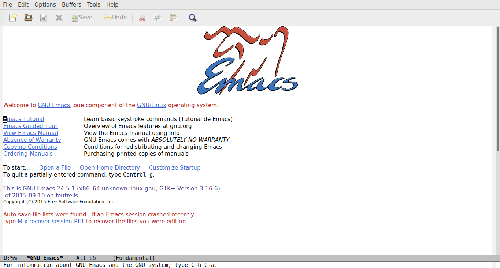

Charla Emacs
Coyote3007 & Nacho
SexyACM@BestAsocEUW.io
Prefurcia
Todo lo aqui expuesto esta creado usando emacs como herramienta principal (Much powerfull) Tutorial usado para crear esta presentacion
At first I was like
 Meh, nada de otro mundo…
But then …

My power increased

Vamos despacito

Aspectos generales
Emacs
-done Interfaz :: Distinguir los principales elementos de la interfaz, saber moverse entre ventanas y buffers -done Shortcuts :: Entender como funcionan los comandos en emacs y como se realizan las operaciones basicas del dia a dia -done Buffers :: Entender que es un buffer, para que se usan y para que no.
- Paquetes
- Primera toma en contacto con los paquetes de emacs, como se instalan y como se configuran dentro de tu init
- Melpa
- Que es melpa, como se usa y que paquetes tiene
- Precompilado y evaluacion
- Que es y para que sirve
- Elisp
- Entender lo basico de elisp para poder configurar los paquetes ya instalados
- Customizacion
- Paquetes utiles para tu dia a dia
- Org-mode
- Magit
- Autocomplete
- Helm
- Autoindent
- …
- A&Q
- Preguntas y respuestas, que quieren hacer con emacs